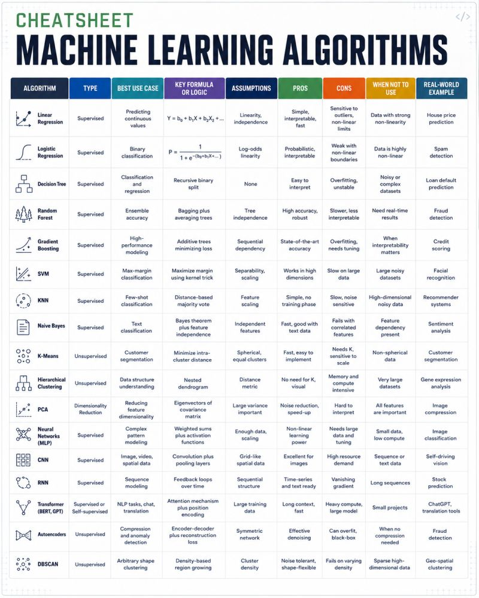

Révision de cette catégorie terminée !
Vous maitrisez ces concepts. Continuez comme ça pour l'examen.
Question ?
Réponse Détaillée
Cliquez au centre pour retournerJeu d'Association : Modèles & Caractéristiques
Associez chaque algorithme (à gauche) à sa définition ou particularité exacte (à droite).
Parfait !
Vous avez associé tous les concepts correctement.
Bilan Visuel : Machine Learning Cheatsheet
Voici la vue d'ensemble des algorithmes que vous devez retenir. Analysez les colonnes "Pros", "Cons" et "Use Case" pour l'examen.
Image source: "cheatsheet_ML.jpeg" - Fiche de synthèse (Supervisé, Non-Supervisé, Avantages, Inconvénients)

1. Apprentissage Supervisé
Régression Linéaire (MCO)
Prédit une variable continue. Minimise la somme des carrés des résidus.
Naïf Bayésien
Classification basée sur Bayes. Hypothèse "naïve" : les caractéristiques sont indépendantes conditionnellement à la classe.
Arbres de Décision & Random Forest
Sépare les données pour maximiser le Gain d'Information (minimiser l'entropie).
Random Forest = ensemble d'arbres pour réduire le sur-apprentissage.
2. Non Supervisé & Préparation
Clustering : K-Means
Partitionne en k clusters. Itératif : Assigne au centroïde le plus proche, puis recalcule le centroïde (moyenne).
Pipeline de Préparation (Data Leakage)
Règle d'or : Ne jamais utiliser les données de Test pour imputer (ex: médiane) ou scaler les données d'entraînement. Toujours utiliser un objet `Pipeline` en Python.
- Imputation (médiane pour résister aux outliers)
- Standardisation (moyenne=0, écart-type=1)
- Modèle (ex: LinearRegression)
3. Évaluation & Métriques
Classification : Matrice & Formules
- Exactitude (Accuracy) : (TP+TN) / Total. Attention si classes déséquilibrées.
- Rappel (Sensibilité) : TP / (TP+FN). Crucial en médecine : ne pas rater de malade (minimiser FN).
- Précision : TP / (TP+FP). Fiabilité de l'alerte.
- F1-Score : Moyenne harmonique 2×(P×R)/(P+R).
Régression
- MSE / RMSE : Pénalise fortement les grandes erreurs.
- Score R² : Proportion de variance expliquée. Si R² < 0, le modèle est pire que prédire la moyenne.
Sur-apprentissage (Overfitting)
La perte (Loss) Train baisse, mais la perte Validation stagne ou remonte.
Solutions : Early Stopping, Dropout, Data Augmentation.
4. Deep Learning : CNN & Architectures
Concepts Clés
- Convolution : Filtres glissants extrayant des caractéristiques spatiales locales (contours).
- Max Pooling : Réduit la dimension, conserve le pixel max. Rend robuste aux petites translations.
- Dropout : Désactive un % de neurones (ex: 25%) durant l'entraînement. Empêche la mémorisation par cœur.
- Adam / Nadam : Optimiseurs adaptant le taux d'apprentissage. Plus efficaces que SGD pur.
Architectures de Segmentation
- FCN (Fully Convolutional Network) : Termine par une déconvolution (Unpooling). FCN-8 (noyau petit) est plus précis mais plus lent à entraîner que FCN-32.
- U-Net : Architecture en "U". Utilise des connexions résiduelles (Bridges) entre la phase de descente (convolution) et de remontée (déconvolution) pour une précision médicale optimale.
Annales & Questions Fréquentes
Cliquez sur une question issue des examens passés pour révéler la correction attendue par les correcteurs.
Réponse attendue :
- Années 1940-1950 : Période de gestation. Neurone artificiel (1943) et Machine de Turing (1950).
- 1956 : Naissance officielle du terme "Intelligence Artificielle" à la conférence de Dartmouth.
- Années 1970-1980 : Systèmes experts, mais "hiver de l'IA" dû à la limitation de la puissance de calcul.
- Années 2000+ : Avènement des GPU.
- 2012 : Victoire d'un réseau profond (ImageNet), boom du Deep Learning moderne et transfert vers la vie quotidienne.
Contexte : La courbe Train descend vers 0, mais la courbe Test stagne puis remonte.
Réponse attendue :
C'est un cas typique de Sur-apprentissage (Overfitting). Le réseau n'arrive plus à généraliser. Il apprend par cœur les données d'entraînement, y compris le bruit.
Solutions à proposer :
- Mettre en place un Early Stopping (arrêt prématuré).
- Ajouter une couche Dropout après les couches denses.
- Faire de la Data Augmentation.
- Vérifier que le jeu de validation est bien représentatif du domaine de définition.
Réponse attendue :
Dans un contexte médical (ex: détection de tumeurs), un Faux Négatif (FN) est potentiellement catastrophique (un patient malade est considéré comme sain et ne sera pas traité).
Un Faux Positif (FP) est moins grave (génère du stress et des examens supplémentaires, mais ne met pas la vie en danger immédiat).
Il faut donc avoir un Rappel (Sensibilité) très élevé pour minimiser les FN, quitte à sacrifier un peu de Précision (ce qui va générer plus de FP).
Réponse attendue :
Un score R² négatif est très mauvais. Il indique que le modèle prédictif effectue des prédictions pires qu'un modèle "naïf" qui se contenterait de prédire systématiquement la moyenne des données. La famille de modèle choisie (ex: Régression Linéaire simple) n'est pas du tout pertinente pour ce problème.
Réponse attendue :
Une ontologie est un système de l'IA Symbolique permettant de formaliser, stocker et organiser des connaissances. Les instances ont des caractéristiques et héritent de concepts. Elle permet :
- De partager et d'organiser des connaissances.
- D'établir une terminologie commune pour réduire les ambiguïtés.
- Aux connaissances d'être exploitées informatiquement par des systèmes experts.
Réponse attendue :
- Induction : Déduit des règles à partir de ses propres observations (ex: Machine Learning).
- Déduction : Crée de nouvelles connaissances à partir de la connaissance théorique déjà acquise (ex: Systèmes Experts).
- Abduction : Recherche des causes et part d'une relation bijective entre causes et effets.
- Analogie : Résout une situation problématique en se fondant sur une situation similaire déjà résolue (ex: Raisonnement à Partir de Cas).
Réponse attendue :
C'est un système organisé autour d'une base de connaissances contenant des "cas sources" (problèmes déjà résolus). Le cycle de fonctionnement s'articule autour de 4 étapes :
- Remémoration : recherche du cas source le plus proche du problème cible.
- Réutilisation : adaptation de la solution du cas source au problème cible.
- Révision : évaluation et correction de la solution suggérée.
- Rétention : mémorisation de ce nouveau cas résolu pour enrichir la base.
Réponse attendue :
Contrairement à la régression linéaire classique (MCO) qui minimise uniquement la somme des carrés des résidus, le modèle LASSO (Least Absolute Shrinkage and Selection Operator) ajoute un terme de pénalité absolue (norme L1) à la fonction objectif :
Minimiser : MSE + α * Σ|βj|
Particularité : Cette fonction de pénalité n'étant pas dérivable en zéro, elle force certains coefficients (β) à devenir exactement nuls, ce qui en fait un excellent outil pour la sélection de caractéristiques (Feature Selection).
Réponse attendue :
- Pooling (ex: Max Pooling) : Placé après la convolution, il ne conserve que la valeur du pixel le plus emblématique (ex: le max) d'un groupe de pixels. Il réduit la dimensionnalité spatiale et apporte une invariance aux petites translations.
- Unpooling (Déconvolution) : C'est l'inverse. Utilisé dans les architectures de segmentation d'images (phase de décodage), il permet de remonter en résolution spatiale pour reconstituer une image simplifiée (masque de segmentation) à partir des filtres.
Réponse attendue :
La rétropropagation permet d'ajuster les poids des arcs (et les biais) pour minimiser l'erreur entre la sortie prédite et la sortie attendue. Le processus commence par la couche de sortie et remonte vers la couche d'entrée, en appliquant la règle de dérivation en chaîne (chain rule).
Les variantes de la descente de gradient incluent :
- Batch Gradient Descent : Calcul de l'erreur sur tout le dataset avant la mise à jour des poids.
- Stochastic Gradient Descent (SGD) : Mise à jour après chaque donnée individuelle.
- Mini-batch : Un compromis, met à jour après un petit lot (batch) de données.